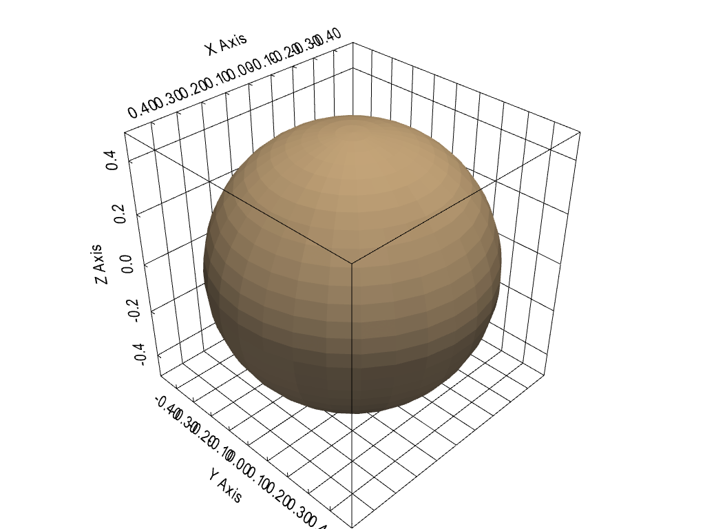

show_bounds#
- Renderer.show_bounds(mesh=None, bounds=None, axes_ranges=None, show_xaxis=True, show_yaxis=True, show_zaxis=True, show_xlabels=True, show_ylabels=True, show_zlabels=True, bold=True, font_size=None, font_family=None, color=None, xlabel='X Axis', ylabel='Y Axis', zlabel='Z Axis', use_2d=False, grid=None, location='closest', ticks=None, all_edges=False, corner_factor=0.5, fmt=None, minor_ticks=False, padding=0.0, render=None)[source]#
Add bounds axes.
Shows the bounds of the most recent input mesh unless mesh is specified.
- Parameters
- mesh
pyvista.DataSetorpyvista.MultiBlock Input mesh to draw bounds axes around.
- bounds
listortuple,optional Bounds to override mesh bounds in the form
[xmin, xmax, ymin, ymax, zmin, zmax].- axes_ranges
list,tuple,ornumpy.ndarray,optional When set, these values override the values that are shown on the axes. This can be useful when plotting scaled datasets or if you wish to manually display different values. These values must be in the form:
[xmin, xmax, ymin, ymax, zmin, zmax].- show_xaxisbool,
optional Makes x axis visible. Default
True.- show_yaxisbool,
optional Makes y axis visible. Default
True.- show_zaxisbool,
optional Makes z axis visible. Default
True.- show_xlabelsbool,
optional Shows x labels. Default
True.- show_ylabelsbool,
optional Shows y labels. Default
True.- show_zlabelsbool,
optional Shows z labels. Default
True.- boldbool,
optional Bolds axis labels and numbers. Default
True.- font_size
float,optional Sets the size of the label font. Defaults to
pyvista.global_theme.font.size.- font_family
str,optional Font family. Must be either
'courier','times', or'arial'. Defaults topyvista.global_theme.font.family.- color
color_like,optional Color of all labels and axis titles. Defaults to
pyvista.global_theme.font.color.Either a string, RGB list, or hex color string. For example:
color='white'color='w'color=[1.0, 1.0, 1.0]color='#FFFFFF'
- xlabel
str,optional Title of the x axis. Default
"X Axis".- ylabel
str,optional Title of the y axis. Default
"Y Axis".- zlabel
str,optional Title of the z axis. Default
"Z Axis".- use_2dbool,
optional This can be enabled for smoother plotting.
Warning
A bug with vtk 6.3 in Windows seems to cause this function to crash.
- gridbool or
str,optional Add grid lines to the backface (
True,'back', or'backface') or to the frontface ('front','frontface') of the axes actor.- location
str,optional Set how the axes are drawn: either static (
'all'), closest triad ('front','closest','default'), furthest triad ('back','furthest'), static closest to the origin ('origin'), or outer edges ('outer') in relation to the camera position.- ticks
str,optional Set how the ticks are drawn on the axes grid. Options include:
'inside', 'outside', 'both'.- all_edgesbool,
optional Adds an unlabeled and unticked box at the boundaries of plot. Useful for when wanting to plot outer grids while still retaining all edges of the boundary.
- corner_factor
float,optional If
all_edges``, this is the factor along each axis to draw the default box. Default is 0.5 to show the full box.- fmt
str,optional A format string defining how tick labels are generated from tick positions. A default is looked up on the active theme.
- minor_ticksbool,
optional If
True, also plot minor ticks on all axes.- padding
float,optional An optional percent padding along each axial direction to cushion the datasets in the scene from the axes annotations. Defaults to 0 (no padding).
- renderbool,
optional If the render window is being shown, trigger a render after showing bounds.
- mesh
- Returns
vtk.vtkCubeAxesActorBounds actor.
Examples
>>> import pyvista >>> mesh = pyvista.Sphere() >>> plotter = pyvista.Plotter() >>> actor = plotter.add_mesh(mesh) >>> actor = plotter.show_bounds( ... grid='front', ... location='outer', ... all_edges=True, ... ) >>> plotter.show()
